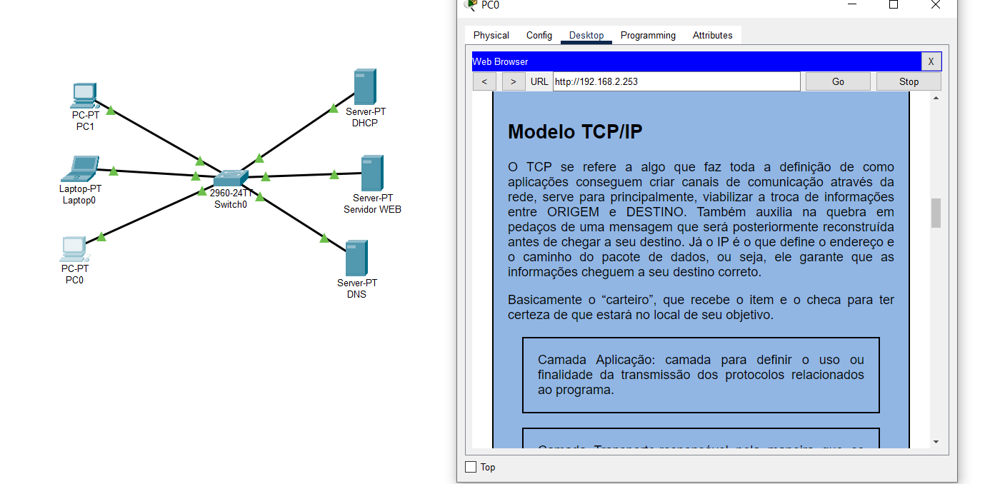

Serviços de rede
Modelo OSI
OSI é a Interconexão de Sistemas Abertos. É o primeiro modelo padrão de
comunicação entre sistemas de computadores e redes, o qual, faz uso de 7 camadas para grantir essa conversa,
que, juntas, realizam a comunicação através de uma rede.

Física: primeira camada do modelo, na qual são especificados os dispositivos, como hubs e
meios de transmissão. Nesse momento, os dados são transmitidos e processados na próxima camada. Funciona
como o exemplo dos correios, a camada física seria as estradas, isto é, o caminho pelo qual as encomendas
percorrem para chegar ao destino.
Dados: aqui, os dados são recebidos do meio físico e passam por uma análise que busca
identificar erros e corrigi-los. Outra função exercida por essa camada é o controle do fluxo de transmissão
dos dados.
Rede: talvez a mais atuante nas redes, sobretudo na internet, essa é a camada responsável pelo
endereçamento do IP de origem e de destino, bem como pela seleção de pacotes que devem ser priorizados para
envio. De modo resumido, a função dela é controlar o roteamento entre a origem e o destino dos dados.
Transporte: se no exemplo dos correios, a primeira camada se assemelha às “estradas”, esta é
representada pelos caminhões e carteiros. Isso porque tal seção garante o transporte dos dados, assegurando
o sucesso tanto no envio quanto no recebimento.
Sessão: a sua função é estabelecer e finalizar a conexão entre hosts, bem como oferecer suporte
às sessões por meio da realização de registros de log e de tarefas de segurança.
Apresentação: nesta etapa, ocorre a tradução dos dados, o que inclui a conversão de códigos
para caracteres, sua compactação e, caso necessário, sua criptografia.
Aplicação: a sétima e última camada tem como foco garantir a interação humano-máquina. Por meio
dela, é possível enviar e-mails, transferir arquivos, acessar websites, conectar remotamente em outras
máquinas, entre outras possibilidades. É aqui que ficam os protocolos mais conhecidos, como HTTP e FTP, além
de serviços como o DNS.
Modelo TCP/IP
O TCP se refere a algo que faz toda a definição de como aplicações conseguem criar canais de comunicação
através da rede, serve para principalmente, viabilizar a troca de informações entre ORIGEM e DESTINO. Também
auxilia na quebra em pedaços de uma mensagem que será posteriormente reconstruída antes de chegar a seu
destino.
Já o IP é o que define o endereço e o caminho do pacote de dados, ou seja, ele garante que as
informações cheguem a seu destino correto. Basicamente o “carteiro”, que recebe o item e o checa para
ter certeza de que estará no local de seu objetivo.
Camada Aplicação: camada para definir o uso ou finalidade da transmissão dos protocolos
relacionados ao programa.
Camada Transporte:responsável pela maneira que os dados serão transmitidos pela rede, conforme
o uso, prioridade ou criticidade do conteúdo trafegado.
Camada de Internet: responsável pelo roteamento de origem e destino dos pacotes. Por meio dela,
os dispositivos de diversas redes privadas e públicas encontram-se para troca de pacotes e informações
solicitadas.
Camada de Enlace: lida com a transferência em si dos dados entre os hosts. Ou seja, finalizando
o paralelo com o serviço postal, trata-se do envio de fato do seu pacote ao destinatário.
Protocolo UDP
O User Datagram Protocol (UDP) é um protocolo de Internet mais simples e sem conexão, no qual os serviços de
verificação e recuperação de erros não são necessários.
Com o UDP, não há sobrecarga para abrir, manter ou encerrar uma conexão — os dados são continuamente enviados
para o destinatário, quer ele os receba ou não.
O remetente não espera para ter certeza de que o destinatário recebeu o pacote. Se o destinatário perder alguns
pacotes UDP aqui e ali, o remetente não os reenviará.

Protocolo DNS
O DNS é um sistema de banco de dados utilizando na internet com o objetivo de traduzir os endereços de IP
(Internet Procol) em nomes de sites.
Existem duas formas de acessar um site na internet: digitando o
nome de domínio que você já está acostumado ou digitando o endereço IP da sua hospedagem.

Protocolo DHCP
O protocolo de configuração dinâmica de hosts (DHCP) é um protocolo de rede padronizado e utilizado em redes
de protocolo da internet (IP), basicamente gerenciar os endereços IP nas redes.
O protocolo de dhcp é
controlado por um servidor que distribui dinamicamente o endereço IP e outras informações a cada host na rede
para que eles possam se comunicar com eficiência.

Protocolo FTP
FTP (File Transfer Protocol) é um protocolo de rede para a transmissão de arquivos entre computadores. Dentro
do conjunto TCP/IP (Transmission Control Protocol/Internet Protocol), ele é um protocolo da camada de
aplicação para o download e upload de arquivos em conexões do tipo cliente/servidor.
HTTP/HTTPS
O HTTP (HyperText Transfer Protocol) nada mais é do que o protocolo transferência de hipertexto padrão da
internet. Isso quer dizer que é por meio dele que os dados se transferem entre o seu computador/smartphone e
os servidores de hipermídia da internet, ou seja, é basicamente uma forma de comunicação.
O protocolo HTTPS (HyperText Transfer Protocol Secure) é idêntico ao HTTP e surgiu com o intuito de
substituí-lo, porém, foi adicionada uma camada do SSL (Secure Sockets Layer) ou de TLS (Transfer Layer
Security). Como os próprios nomes e termos já dizem, no HTTPS foram adicionados alguns princípios de
segurança, como confidencialidade, integridade e autenticação.

WEB SERVER
Um servidor da web (web server) é responsável por hospedar o conteúdo do seu site, ou aplicação baseada na
web para os usuários através da Internet. Podem ser imagens, textos, dados de aplicativos, vídeos, por
exemplo.
Dessa forma, o navegador da web solicita dados do site, o que acontece quando o usuário clica em um determinado
link ou clicar para baixar um documento que foi exibido no navegador.
----------------------------------------------------------------------------------------------------------------
Captura de tela solicitada mostrando como ficou o funcionamento do projeto de website hospedado no Cisco Packet
Tracer.
